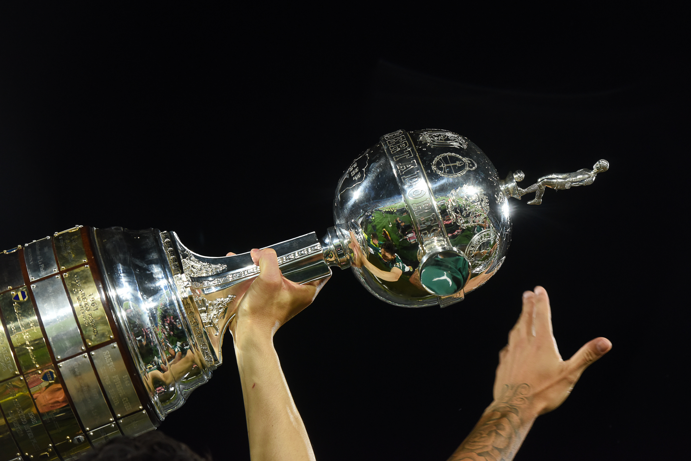

O título do Atlético-MG na Libertadores de 2013 é uma das campanhas mais emocionantes da história recente do futebol sul-americano. Foi a primeira conquista do Galo na competição, um troféu perseguido durante décadas e levantado em uma trajetória que teve futebol ofensivo, sofrimento extremo, jogos inesquecíveis no Independência, final no Mineirão, pênaltis, roteiro improvável e personagens que viraram lendas do clube.
O clube também chegou à final em 2024, mas a taça que transformou a história atleticana foi mesmo a de 2013, quando o time de Cuca, Ronaldinho Gaúcho, Victor, Jô, Diego Tardelli, Bernard, Réver, Leonardo Silva, entre outros, levantou o troféu em uma decisão dramática.
A campanha teve 14 jogos, nove vitórias, dois empates, três derrotas, 29 gols marcados e 18 sofridos.
A Libertadores de 2013 não foi apenas um título. Foi uma narrativa de fé, tensão e catarse. O Galo quase caiu nas quartas, quando Victor defendeu o pênalti de Riascos contra o Tijuana aos 47 minutos do segundo tempo. Quase caiu na semifinal, quando precisou reverter 2 a 0 contra o Newell’s e avançou nos pênaltis. Quase caiu na final, quando Leonardo Silva marcou o segundo gol contra o Olimpia aos 41 minutos do segundo tempo e levou a decisão para a prorrogação. Em todos esses momentos, o Atlético sobreviveu.
A conquista continental também se conecta à tradição atleticana em competições eliminatórias. O clube construiu parte de sua identidade em noites de pressão, mata-mata e torcida em combustão, algo que também aparece na história dos títulos na Copa do Brasil. No cenário sul-americano, a taça de 2013 ganha ainda mais força quando colocada dentro da história da Libertadores.
A conquista foi inédita e teve peso histórico enorme. O adversário da final era tricampeão da Libertadores e carregava tradição continental. O Atlético, por outro lado, buscava sua primeira taça da América. A vitória nos pênaltis, depois de devolver um 2 a 0 no tempo normal, transformou aquela decisão em uma das mais dramáticas da história do torneio.
A conquista tão esperada
O Atlético-MG chegou à Libertadores de 2013 como um dos times mais empolgantes do Brasil. Em 2012, a equipe havia feito grande campanha no Campeonato Brasileiro, com Ronaldinho Gaúcho como principal nome técnico e uma conexão imediata com a torcida. A base foi mantida e reforçada, e o time entrou na competição carregando expectativa alta, mas também uma pressão enorme: o clube ainda não tinha o título mais importante do continente.
Cuca montou uma equipe ofensiva, intensa e emocionalmente muito forte. O time jogava com Victor no gol; Marcos Rocha e Junior Cesar ou Richarlyson nas laterais; Leonardo Silva e Réver como zagueiros de imposição; Pierre e Leandro Donizete protegendo o meio; Ronaldinho como cérebro; Bernard e Diego Tardelli dando mobilidade; e Jô como referência no ataque.
A identidade era clara. Pressionava muito em casa, acelerava pelos lados, usava a bola parada de Ronaldinho, explorava a velocidade de Bernard e Tardelli e tinha Jô como centroavante de presença. Ao mesmo tempo, era um time emocionalmente explosivo: capaz de grandes atuações, mas também de viver no limite. Essa mistura ajudou a transformar a campanha em uma história única.
Campanha completa do título
Fase de grupos:
- Atlético-MG 2 x 1 São Paulo
Gols: Jô e Réver, Aloísio marcou para o São Paulo. - Arsenal de Sarandí 2 x 5 Atlético-MG
Gols: Bernard três vezes, Diego Tardelli e Jô. Furch e Aguirre marcaram para o Arsenal. - Atlético-MG 2 x 1 The Strongest
Gols: Jô e Ronaldinho Gaúcho. - The Strongest 1 x 2 Atlético-MG
Gols: Diego Tardelli e Luis Méndez, contra. Harold Reina marcou para o The Strongest. - Atlético-MG 5 x 2 Arsenal de Sarandí
Gols: Diego Tardelli, Ronaldinho Gaúcho duas vezes, Luan e Alecsandro. Braghieri e Benedetto marcaram para o Arsenal. - São Paulo 2 x 0 Atlético-MG
Rogério Ceni e Ademilson fizeram os gols do São Paulo.
Oitavas de final:
- São Paulo 1 x 2 Atlético-MG
Gols: Ronaldinho Gaúcho e Diego Tardelli, Jadson marcou para o São Paulo. - Atlético-MG 4 x 1 São Paulo
Gols: Jô três vezes e Diego Tardelli, Luis Fabiano marcou para o São Paulo.
Quartas de final:
- Tijuana 2 x 2 Atlético-MG
Gols: Diego Tardelli e Luan, Riascos e Fidel Martínez marcaram para o Tijuana. - Atlético-MG 1 x 1 Tijuana
Gol: Réver, Riascos marcou para o Tijuana.
Semifinal:
- Newell’s Old Boys 2 x 0 Atlético-MG
Maxi Rodríguez e Scocco fizeram os gols. - Atlético-MG 2 x 0 Newell’s Old Boys
Gols : Bernard e Guilherme. Nos pênaltis, Atlético-MG 3 x 2 Newell’s Old Boys.
Final:
- Olimpia 2 x 0 Atlético-MG
Alejandro Silva e Wilson Pittoni fizeram os gols. - Atlético-MG 2 x 0 Olimpia
Gols: Jô e Leonardo Silva. Nos pênaltis, Atlético-MG 4 x 3 Olimpia.
A fase de grupos: melhor campanha e o “gol da água”
A estreia já entrou para a memória da competição. No dia 13 de fevereiro, o Galo venceu o São Paulo por 2 a 1 no Independência. O primeiro gol nasceu em um lance curioso que ficou conhecido como “gol da água”. Ronaldinho Gaúcho estava perto da linha lateral, bebendo água ao lado de Rogério Ceni, quando percebeu que a cobrança de lateral seria autorizada. Ficou livre, recebeu a bola dentro da área e tocou para Jô marcar.
Depois, Ronaldinho voltou a ser decisivo. Pela direita, driblou a marcação e cruzou com precisão para Réver cabecear e fazer 2 a 0. Aloísio descontou no fim, mas a vitória deu ao Atlético seus primeiros três pontos e mostrou que o Independência seria um território pesado para qualquer adversário.
Na segunda rodada, fez uma de suas atuações mais fortes fora de casa. Mesmo saindo atrás contra o Arsenal de Sarandí, na Argentina, venceu por 5 a 2. Bernard marcou três vezes, Diego Tardelli fez seu primeiro gol depois do retorno ao clube, e Jô também deixou o dele. A partida teve presença forte da torcida atleticana em Sarandí e mostrou que o Galo não dependeria apenas dos jogos em Belo Horizonte para impor seu futebol.
Contra o The Strongest, no Independência, venceu por 2 a 1. Ronaldinho deu passe para Jô abrir o placar e depois marcou de pênalti. Melgar descontou para os bolivianos. Na volta, na altitude de La Paz, o Galo venceu novamente por 2 a 1, com gol de Diego Tardelli e gol contra de Luis Méndez. Foi um resultado enorme, porque vencer na altitude sempre exige resistência física e mental.
Na quinta rodada, outra goleada sobre o Arsenal: 5 a 2 no Independência. Diego Tardelli, Ronaldinho duas vezes, Luan e Alecsandro marcaram. O segundo gol de Ronaldinho foi uma pintura, com uma cavadinha de fora da área que encobriu o goleiro Campestrini e entrou no ângulo. A vitória manteve o Atlético como uma das sensações do torneio.
A única derrota na fase de grupos veio na última rodada, contra o São Paulo, no Morumbi. O time paulista venceu por 2 a 0, com gols de Rogério Ceni e Ademilson, e garantiu classificação às oitavas. Mesmo com o tropeço, o Atlético terminou a fase como líder do Grupo 3 e melhor campanha geral da Libertadores, com 15 pontos.
Oitavas de final: reencontro com o São Paulo e show no Horto
O sorteio colocou novamente o São Paulo tri campeão da competição, no caminho do Atlético. O duelo tinha ingredientes fortes: dois brasileiros, um adversário tradicional, Rogério Ceni do outro lado e a sensação de que o Galo, melhor time da fase de grupos, precisava confirmar sua superioridade no mata-mata.
No jogo de ida, no Morumbi, o Atlético venceu por 2 a 1. Jadson abriu o placar para o São Paulo, mas Ronaldinho empatou e Diego Tardelli virou. O resultado foi enorme porque colocou o Galo em vantagem para decidir no Independência.
Na volta, o Atlético fez uma atuação dominante. Venceu por 4 a 1, com três gols de Jô e um de Diego Tardelli. Luis Fabiano descontou para o São Paulo. O placar agregado terminou em 6 a 2. Mais do que a classificação, a goleada reforçou a imagem do Atlético como favorito ao título. Ronaldinho comandou o ritmo, Jô foi letal na área, Tardelli se movimentou com inteligência e a torcida transformou o Horto em um ambiente sufocante.
Aquela noite também consolidou Jô como um dos grandes nomes da competição. O centroavante marcou três vezes em um jogo de mata-mata, contra um adversário brasileiro pesado, e mostrou que era muito mais do que um finalizador: era referência, ponto de apoio e presença decisiva.
Drama mexicano e a defesa do santo Victor
As quartas de final contra o Tijuana foram o primeiro grande teste de sobrevivência. O time mexicano era organizado, intenso e perigoso. No jogo de ida, no Estádio Caliente, o Galo saiu perdendo por 2 a 0, com gols de Riascos e Fidel Martínez. O cenário era muito complicado. Mas o Atlético reagiu.
Diego Tardelli diminuiu no segundo tempo, e Luan, aos 46 minutos, empatou por 2 a 2. O gol nos acréscimos mudou completamente o confronto. Em vez de voltar para Belo Horizonte pressionado por uma derrota, o Galo levou dois gols fora de casa na bagagem e ficou em boa condição para decidir no Independência.
A volta, porém, virou um dos jogos mais dramáticos da história atleticana. Riascos abriu o placar para o Tijuana aos 25 minutos do primeiro tempo. Réver empatou aos 40, resultado que classificava o Atlético pelo critério do gol fora de casa. Só que, aos 47 minutos do segundo tempo, Leonardo Silva cometeu pênalti em Márquez. Riascos pegou a bola. Se marcasse, o Tijuana eliminaria o Galo.
Foi aí que Victor entrou definitivamente para a história. O goleiro caiu para um lado, deixou o pé esquerdo no meio do gol e defendeu a cobrança. O lance ficou conhecido como “milagre do Horto”. A defesa não foi apenas uma intervenção técnica; foi uma mudança de destino. Naquele segundo, o Atlético deixou de estar eliminado para seguir vivo na Libertadores.
Victor foi soterrado pelos companheiros. A torcida explodiu. O Independência virou um dos símbolos da campanha. A partir dali, o goleiro deixou de ser apenas um grande jogador e passou a ocupar um lugar quase religioso na memória atleticana.
Apagão no Horto e outra decisão por pênaltis
Na semifinal, o adversário foi o Newell’s Old Boys, da Argentina. O time de Rosario era forte, competitivo e tinha nomes importantes. A ida, no Estádio Marcelo Bielsa, terminou 2 a 0 para os argentinos, com gols de Maxi Rodríguez e Scocco. O resultado obrigava o Atlético a vencer por dois gols para levar aos pênaltis ou por três para se classificar no tempo normal.
No Independência, em 10 de julho de 2013, o Galo viveu mais uma noite de tensão extrema. Bernard abriu o placar ainda no primeiro tempo, recolocando o Atlético no confronto. O segundo gol, porém, demorou. O relógio corria, o Newell’s resistia e o sonho parecia escapar. Aos 50 minutos do segundo tempo, Guilherme acertou um chute histórico de fora da área e fez 2 a 0.
O jogo foi para os pênaltis. Antes da disputa, houve queda de energia no estádio, aumentando ainda mais o clima dramático. Nas cobranças, Victor voltou a ser decisivo. O Atlético venceu por 3 a 2 e chegou à final. O goleiro defendeu a última cobrança, de Maxi Rodríguez, e o Independência viveu outra catarse.
A classificação contra o Newell’s reforçou uma característica daquela campanha: o Atlético parecia gostar do impossível. O time se colocava em cenários de desespero, mas encontrava uma forma de sobreviver. A defesa contra o Tijuana e a disputa contra o Newell’s formaram a base emocional para a final.
Derrota no Paraguai e decisão no Mineirão
A final da Libertadores de 2013 foi contra o Olimpia, do Paraguai, um dos clubes mais tradicionais do continente. Tricampeão da competição, os paraguaios tinham camisa pesada, defesa forte e experiência continental. O primeiro jogo aconteceu em 17 de julho, no Defensores del Chaco, em Assunção.
O Atlético teve dificuldades. O Olimpia venceu por 2 a 0, com gols de Alejandro Silva e Wilson Pittoni. O segundo gol, marcado no fim, teve peso enorme, porque obrigava o Galo a repetir na final o roteiro da semifinal: vencer por dois gols de diferença para levar aos pênaltis ou por três para ser campeão no tempo normal.
A volta foi marcada para 24 de julho, no Mineirão. O estádio recebeu uma das maiores noites da história do Atlético. Como o Independência não tinha capacidade suficiente para a decisão, o Galo levou a final para o Gigante da Pampulha. O ambiente era de pressão, fé e ansiedade. A torcida sabia que o time precisava de uma reação perfeita.
Logo no início do segundo tempo, Jô marcou o primeiro gol. O centroavante aproveitou jogada pela esquerda e empurrou para a rede, colocando fogo na decisão. O tempo passou, o Olimpia resistiu, e o Atlético pressionou. Aos 41 minutos, Ronaldinho cobrou escanteio, a bola passou por todo mundo, e Leonardo Silva apareceu no segundo pau para cabecear e fazer 2 a 0.
O Mineirão explodiu. O placar agregado estava empatado em 2 a 2. A final foi para a prorrogação, mas ninguém marcou. A Libertadores seria decidida nos pênaltis.
A disputa de pênaltis teve mais drama. Victor defendeu a primeira cobrança do Olimpia, batida por Miranda. Pelo Atlético, Alecsandro converteu. Depois, os paraguaios marcaram com Ferreyra, Aranda e Salgueiro. Pelo Galo, Guilherme, Jô e Leonardo Silva também converteram. Ronaldinho nem precisou bater.
Na última cobrança do Olimpia, Matías Giménez acertou a trave. O Atlético venceu por 4 a 3 nos pênaltis. O Galo era campeão da Libertadores pela primeira vez.
A sequência das cobranças do Atlético foi perfeita, Victor, mais uma vez, participou diretamente da salvação. Leonardo Silva, que já havia feito o gol que levou a final para a prorrogação, também bateu e marcou o último pênalti alvinegro.
Artilharia e referência ofensiva
Jô foi o artilheiro da Libertadores de 2013, com sete gols. O centroavante marcou contra São Paulo, Arsenal, The Strongest, voltou a decidir nas oitavas com três gols contra o São Paulo e fez o primeiro gol da finalíssima contra o Olimpia.
Seus gols não foram apenas numerosos; foram pesados. Jô abriu o caminho na estreia, marcou em goleadas, foi decisivo no mata-mata e recolocou o Atlético vivo na decisão. Em uma equipe com Ronaldinho, Bernard e Tardelli, ele foi a referência final, o jogador que dava profundidade, prendia zagueiros e aparecia na área no momento certo.
A artilharia continental consolidou uma temporada especial. Jô chegou ao Atlético em busca de retomada na carreira e encontrou um sistema perfeito para suas características. Com Ronaldinho criando, Bernard acelerando e Tardelli se movimentando, o centroavante virou peça central.
O maestro da América
Ronaldinho Gaúcho foi o grande nome técnico do time. Marcou quatro gols, deu assistências decisivas e comandou o time com passes, bolas paradas, visão de jogo e carisma. Mais do que números, sua presença mudou o patamar emocional do clube.
O título também teve peso pessoal para Ronaldinho. Campeão do mundo pela Seleção Brasileira, vencedor da Champions League pelo Barcelona e eleito melhor do mundo em sua carreira, ele ainda não tinha uma Libertadores. Em 2013, completou esse capítulo com protagonismo.
Ronaldinho participou do “gol da água” na estreia, deu assistências em jogos grandes, marcou golaços, converteu pênaltis e foi o ponto de equilíbrio criativo da equipe. No segundo gol da finalíssima, cobrou o escanteio que terminou na cabeçada de Leonardo Silva. Mesmo sem bater pênalti na decisão final, sua assinatura estava em toda a campanha.
O goleiro que virou santo
Victor é o símbolo máximo do drama atleticano. A defesa de pênalti contra Riascos, aos 47 minutos do segundo tempo, nas quartas de final contra o Tijuana, é um dos lances mais importantes da história do clube. Sem ela, o Atlético estaria eliminado.
Na semifinal contra o Newell’s, voltou a ser decisivo nos pênaltis. Na final contra o Olimpia, defendeu a cobrança de Miranda e abriu o caminho para o título. Em uma campanha decidida tantas vezes no detalhe, o goleiro foi o jogador que manteve o sonho vivo quando tudo parecia perdido.
A idolatria por Victor não nasceu apenas da qualidade técnica. Nasceu do contexto. O Atlético carregava décadas de espera, frustrações e quase conquistas. Quando Victor defendeu aquele pênalti contra o Tijuana, a torcida viu mais do que uma defesa: viu uma ruptura com o azar. Por isso, ele foi canonizado pela Massa.
Os outros heróis
Bernard foi um dos jogadores mais elétricos da campanha. Marcou quatro gols, incluindo três contra o Arsenal na Argentina e um contra o Newell’s na semifinal. Sua velocidade, drible curto e intensidade davam ao Atlético uma arma poderosa pelo lado esquerdo. Era o jogador que quebrava linhas, acelerava transições e desorganizava defesas.
Diego Tardelli marcou seis gols e teve papel enorme. Fez gols contra Arsenal, The Strongest, São Paulo e Tijuana. Mais do que finalizador, atuava como atacante móvel, conectando meio e ataque. Sua volta ao clube foi um componente emocional forte da campanha.
Leonardo Silva virou herói eterno pelo gol contra o Olimpia aos 41 minutos do segundo tempo. O zagueiro também marcou o último pênalti do Atlético na disputa final. Réver, capitão e parceiro de zaga, também teve gols importantes, como contra São Paulo e Tijuana. Juntos, formaram uma dupla de imposição física, liderança e bola aérea.
O Atlético tinha muitos jogadores ofensivos, mas só funcionava porque os volantes protegiam, combatiam e sustentavam o time sem a bola. Marcos Rocha deu força pela direita. Junior Cesar, Richarlyson e Josué tiveram participações relevantes. Luan foi decisivo contra o Tijuana, com gol nos acréscimos no México. Guilherme, muitas vezes reserva, fez o gol salvador contra o Newell’s e marcou pênalti na final.
O fim do rótulo de quase
Cuca também teve um capítulo pessoal importante nessa Libertadores. Antes de 2013, o treinador carregava a fama de montar bons times, mas sofrer em decisões. A campanha do Atlético parecia testar esse rótulo a cada fase.
O trabalho de Cuca foi além da escalação. Ele conseguiu dar liberdade a Ronaldinho, potencializar Bernard, recuperar Jô, encaixar Tardelli e manter a equipe agressiva sem perder totalmente a estrutura. O Atlético era ofensivo, mas tinha volantes fortes, zagueiros líderes e um goleiro decisivo.
A conquista de 2013 mudou a trajetória do treinador. Cuca deixou de ser associado ao quase e passou a ser o técnico campeão da América pelo Atlético-MG. A imagem dele ajoelhado, rezando e vivendo cada lance na beira do campo, combina com o espírito daquela campanha.
Os palcos das glórias e a força da Massa
A Libertadores de 2013 não pode ser contada sem falar dos estádios. O Independência foi o grande caldeirão da campanha. No Horto, o Atlético construiu sua força emocional. Venceu São Paulo, The Strongest, Arsenal, São Paulo novamente, empatou com Tijuana em uma noite de milagre e eliminou o Newell’s nos pênaltis.
O estádio tinha uma atmosfera diferente. Menor, mais próximo do campo, barulhento e sufocante, o Independência virou uma extensão da torcida atleticana. A cada escanteio, falta, pressão ou defesa, a arquibancada parecia empurrar o time para dentro da área adversária. O famoso “caiu no Horto, tá morto” virou síntese daquele momento.
O Mineirão, por sua vez, recebeu a consagração. A final contra o Olimpia precisava de maior capacidade e ganhou dimensão histórica no Gigante da Pampulha. Foi ali que Jô abriu o caminho, Leonardo Silva empatou o agregado, Victor começou a disputa de pênaltis com defesa e o Atlético levantou a taça.
A Massa foi personagem central. A torcida não apenas apoiou; ela viveu a campanha como uma causa. Esteve presente em Sarandí, empurrou no Horto, lotou o Mineirão e transformou cada jogo em evento coletivo. A Libertadores do Atlético foi vencida por um time forte, mas também por uma arquibancada em estado permanente de fé.
Os artilheiros da campanha:
- Jô — 7 gols
- Diego Tardelli — 6 gols
- Bernard — 4 gols
- Ronaldinho Gaúcho — 4 gols
- Réver — 2 gols
- Luan — 2 gols
- Alecsandro — 1 gol
- Guilherme — 1 gol
- Leonardo Silva — 1 gol
A distribuição mostra um time com várias fontes ofensivas. Jô foi o artilheiro e referência. Tardelli foi o atacante móvel. Bernard decidiu em velocidade. Ronaldinho construiu e finalizou. Zagueiros como Réver e Leonardo Silva apareceram em momentos fundamentais. Luan, Alecsandro e Guilherme saíram do banco para mudar jogos.
A representatividade na história
O título de 2013 representa a libertação continental do Atlético-MG. O clube já tinha uma torcida enorme, tradição nacional, ídolos históricos e uma identidade muito forte, mas ainda faltava a Libertadores. A conquista colocou o Galo no topo da América e mudou a percepção externa sobre o clube.
Também representa o auge de uma geração, cada personagem teve um papel claro na história.
A campanha também ficou marcada por um roteiro quase cinematográfico. Poucos campeões passaram por tantas situações-limite em uma mesma edição, em todos os casos, encontrou uma saída.
A conquista redefiniu ídolos, mudou o patamar internacional do clube e criou algumas das imagens mais fortes da história atleticana.
Aquele time também reforçou a ideia de que a Libertadores é uma competição de técnica, mas também de resistência emocional. O Atlético não venceu porque teve vida fácil. Venceu porque soube sobreviver ao caos. A taça veio em meio a noites de pressão, sofrimento e fé, exatamente como a torcida atleticana costuma entender o futebol.
Em 2013, o Galo consquistou a América pela primeira vez. E fez isso de forma inesquecível: com craque mundial, goleiro santo, artilheiro decisivo, zagueiro herói e torcida em combustão. Por isso, o título do Atlético-MG na Libertadores não é apenas uma conquista continental. É uma epopeia alvinegra, uma campanha que parece escrita para ser lembrada em cada detalhe, geração após geração.